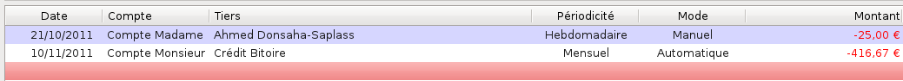
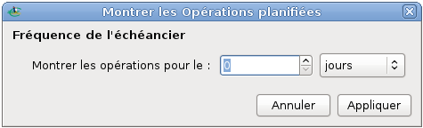
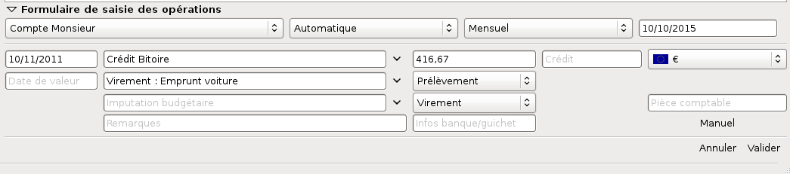
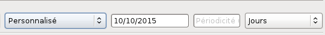
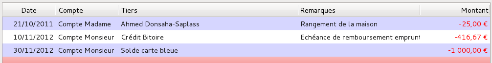
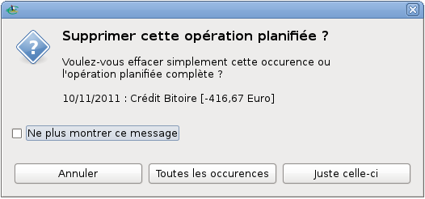

L’échéancier permet de planifier des opérations qui reviennent régulièrement avec des dates ou des intervalles de temps déterminés. Une fois qu’une opération est enregistrée dans l’échéancier, Grisbi recopie automatiquement l’opération planifiée dans la liste des opérations dès que sa date d’échéance est atteinte.
De plus, Grisbi affiche dans la page d’accueil des alertes au déclenchement des échéances de ces opérations (voir la section 4.3.1, Affichage de la page d’accueil.
Pour planifier des opérations, cliquez sur Échéancier dans le panneau de navigation, ou sélectionnez Opérations Planifiées avec la barre d’information (voir le chapitre 4, Accueil).
Un calendrier s’affiche en bas du panneau de navigation, et le pavé des détails possède alors trois éléments :
Vous pouvez configurer les paramètres des alertes de l’échéancier dans le menu Édition - Préférences (voir la section 22.1.6, Échéancier).
La barre d’outils des opérations planifiées présente les fonctions suivantes :
La barre d’outils peut être déplacée dans l’écran en cliquant sur sa poignée (petit rectangle vertical à gauche de la barre) et en la déplaçant. Pour la réattacher à son emplacement d’origine dans le pavé des détails, la remettre en haut de la fenêtre, le haut de la poignée sur le petit trait qui visualise sa place d’origine.
La liste des opérations planifiées s’affiche dans le panneau des détails.

Figure 10.1: Liste des opérations planifiées
Elle affiche en haut la barre des libellés des colonnes. Vous pouvez élargir ou rétrécir une colonne en cliquant sur le séparateur entre deux colonnes et en le déplaçant. Pour rétablir la largeur des colonnes à leur valeur par défaut, sélectionnez le menu Affichage - Réinitialiser la largeur des colonnes.
Vous pouvez déplacer la liste des opérations planifiées vers le haut ou vers le bas avec la molette de la souris, ou bien avec la souris et l’ascenseur vertical. Le déplacement éventuel vers la gauche ou la droite se fait avec la souris et l’ascenseur horizontal.
Chaque opération est affichée sur une seule ligne et au maximum six colonnes, ce qui fait au maximum six champs d’information pour chaque opération planifiée. Les champs d’affichage, ainsi que les libellés des colonnes, sont les suivants :
Note : si l’affichage du champ Remarques a été demandé, il s’affiche à la place des champs Périodicité et Mode, ce qui ne fait plus que cinq colonnes et cinq champs affichés.
Une ligne supplémentaire vide s’affiche juste en-dessous de la dernière ligne d’opération, et sert à créer une nouvelle opération planifiée (voir la section 10.6, Nouvelle opération planifiée).
Pour des raisons de lisibilité de l’affichage, Grisbi présente une alternance de couleurs de fond violet et blanc à chaque ligne.
En cliquant sur l’outil Affichage dans la barre d’outils, une liste déroulante vous permet de choisir plusieurs modes d’affichage des prochaines occurrences :
L’affichage courant y est indiqué par une coche, ainsi que le nombre d’opérations dans cette vue.
Si vous choisissez l’affichage personnalisé, une nouvelle fenêtre affiche deux listes déroulantes pour choisir le nombre et la période désirés.

Figure 10.2: Choix de l’affichage de la période personnalisée
Pour changer l’ordre d’affichage des opérations planifiées, vous pouvez faire un tri sur les opérations sur un des champs d’information ; procédez comme suit :
Note : ces triangles peuvent être remplacés, en fonction du thème de l’environnement de bureau ou du gestionnaire de fenêtres que vous utilisez, par d’autres caractères tels que +, -, >, <, etc.
Le formulaire de saisie des opérations planifiées s’affiche en-dessous de la liste des opérations planifiées. Il est similaire au formulaire de saisie des opérations ordinaires, mais il comprend, dans sa partie supérieure, une ligne supplémentaire de trois à six champs pour indiquer :

Figure 10.3: Formulaire de saisie des opérations planifiées

Figure 10.4: Saisie d’une périodicité personnalisée
La partie inférieure du formulaire est strictement identique au formulaire de saisie des opérations ordinaires, et est géré de la même manière , voir la section 8.3, Formulaire de saisie.
Une fois le formulaire affiché, un menu contextuel accessible par un clic-droit dans un champ de saisie permet d’effectuer les actions suivantes :
Le choix methodes de saisie permet de changer les caractères accentués.
Le choix Insérer un caractere de controle Unicode permet d’insérer un code Unichar qui modifie la présentation ; par exemple RLO (forçage droite-à-gauche) renverse l’ordre des lettres et la position du texte.
De plus, un autre menu contextuel accessible par un clic-droit dans le formulaire de saisie, dans une zone grise en dehors des champs de saisie, permet d’accéder à la configuration du formulaire, en sélectionnant Configurer le formulaire (voir la section 22.4, Formulaire des opérations).
Notez que le choix des types d’opérations est nécessairement lié au type du compte sélectionné (voir la section 7.7, Types de compte de Grisbi).
Un calendrier s’affiche à la place du bas du panneau de navigation. Il indique en caractères gras les dates auxquelles des opérations planifiées de tous les comptes arrivent à échéance, et sur fond bleu la date du jour.
Cliquez sur le calendrier pour le sélectionner. Vous pouvez le parcourir avec la souris ou le clavier :
Pour sélectionner une opération planifiée, vous avez deux moyens :
L’opération apparaît alors sur fond bleu et ses détails s’affichent dans le formulaire.
Un menu contextuel est disponible sur la liste des opérations planifiées. Un clic-droit sur la ligne d’une opération permet les fonctions suivantes, selon le contexte :
La saisie d’une opération planifiée se fait d’une manière similaire à la saisie d’une opération ordinaire.
Vous pouvez ouvrir le formulaire de saisie avec l’une de ces méthodes :
Note : ce triangle peut être remplacé, en fonction du thème de l’environnement de bureau ou du gestionnaire de fenêtres que vous utilisez, par d’autres caractères tels que +, -, >, <, etc.
Renseignez les champs avec les paramètres de votre opération planifiée. Pour plus de détails sur la saisie de ces paramètres dans le formulaire, voir les sections 10.3, Formulaire de saisie des opérations planifiées et 10.4, Calendrier et prévisions.
La ventilation d’une opération planifiée se fait d’une manière similaire à la ventilation d’une opération ordinaire. Une fois que vous avez renseigné les champs de la première ligne du formulaire (voir la section 10.3, Formulaire de saisie des opérations planifiées), saisissez les autres paramètres de l’opération dans la partie inférieure de ce formulaire (voir la section 8.3, Formulaire de saisie), et procédez à la saisie de l’opération planifiée ventilée, comme décrit précisément dans la section 8.8, Ventilation d’une opération.
Pour modifier une opération planifiée, procédez comme suit :
Pour cloner une opération planifiée, sélectionnez-la pour qu’elle s’affiche dans le formulaire de saisie, puis utilisez l’une de ces deux méthodes :
L’opération sélectionnée précédemment apparaît toujours sur fond rouge, et l’opération clonée s’affiche dans une nouvelle ligne en-dessous.
Vous pouvez alors éditer cette nouvelle opération, par exemple en modifiant la date.
Vous pouvez afficher ou cacher les remarques de deux manières :
Les remarques de toutes les opérations s’affichent alors à la place des colonnes Périodicité et Mode dans la liste des opérations planifiées. Recommencer la même séquence réaffiche les colonnes Périodicité et Mode à la place de la colonne Remarques.

Figure 10.5: Affichage des remarques des opérations planifiées
La fonction Exécuter une opération planifiée sert uniquement à faire la recopie, dans le formulaire de saisie, de l’occurrence d’une opération sélectionnée dans la liste des opérations planifiées. Pour que cette occurrence soit effectivement transférée dans la liste des opérations du compte concerné, il est nécessaire de valider ensuite le formulaire de saisie, après avoir éventuellement modifié l’opération.
Pour exécuter une occurrence d’une opération planifiée, procédez comme suit :
Note : après cette validation, la recopie est faite sans autre avertissement.
Vous pouvez aussi vérifier que l’occurrence exécutée de l’opération planifiée se trouve maintenant bien dans la liste des opérations du compte concerné.
Pour supprimer une opération planifiée, procédez comme suit :

Figure 10.6: Suppression d’une opération planifiée
Attention : immédiatement après le choix entre Toutes les occurrences et Juste celle-ci, la suppression est exécutée sans autre avertissement.
Attention : la suppression d’une opération planifiée est irréversible !